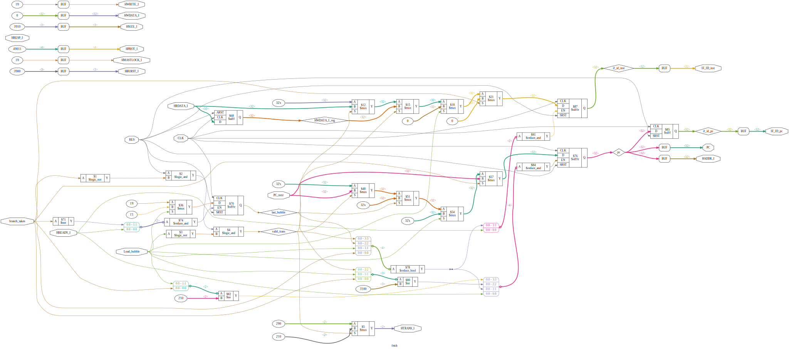
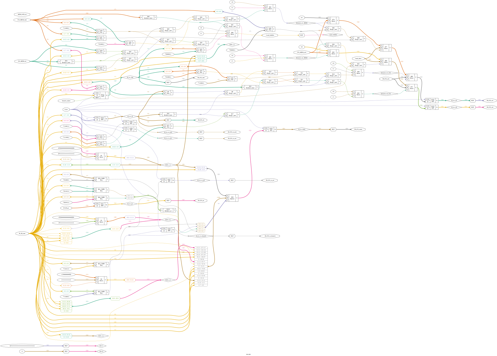
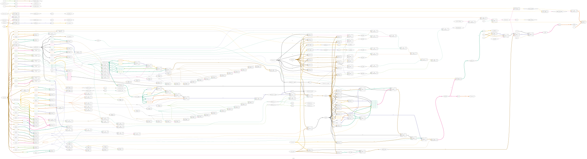
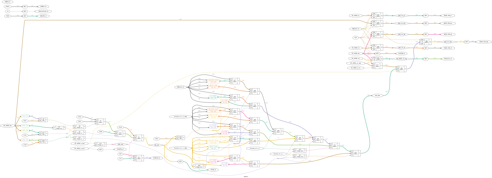
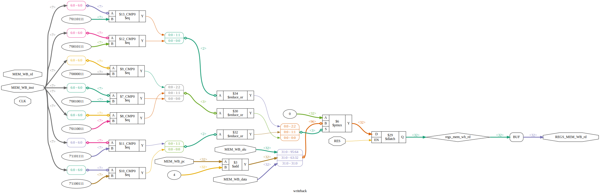
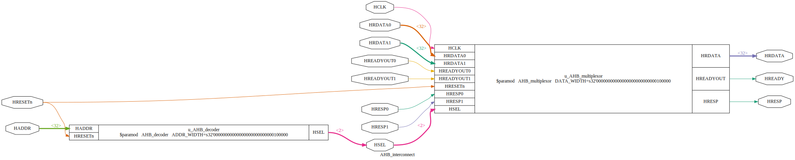
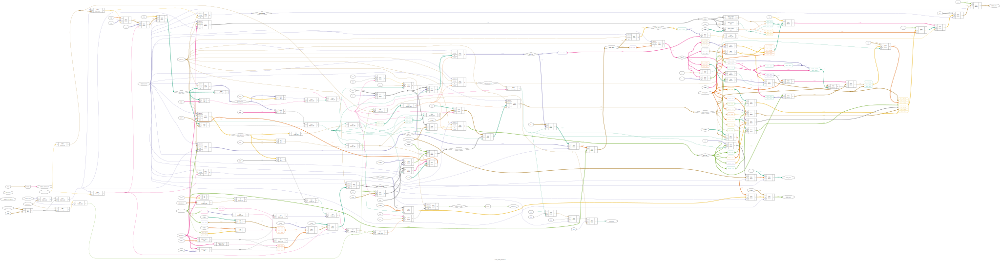

LibreCore RTL 设计图示 / RTL Design Diagrams
说明 / Note: 本页面展示使用 Yosys + GraphViz 生成的 RTL 设计图示。每个模块提供 SVG 和 PNG 两种格式。SVG 格式支持无损缩放，推荐使用。
This page displays RTL design diagrams generated using Yosys + GraphViz. Each module is available in both SVG and PNG formats. SVG format supports lossless scaling and is recommended.
系统概览 / System Overview
LibreCore 是一个基于 RISC-V RV32I 指令集的五级流水线处理器，采用经典的 IF-ID-EX-MEM-WB 架构，支持 AHB-Lite 总线接口。
LibreCore is a five-stage pipeline RISC-V RV32I processor with a classic IF-ID-EX-MEM-WB architecture and AHB-Lite bus interface support.
| 特性 / Feature |
描述 / Description |
| 指令集 / ISA |
RISC-V RV32I |
| 流水线级数 / Pipeline Stages |
5 (IF, ID, EX, MEM, WB) |
| 总线接口 / Bus Interface |
AHB-Lite (Dual: Instruction + Data) |
| 寄存器数量 / Registers |
32 × 32-bit |
| 数据前推 / Forwarding |
EX-EX, MEM-EX |
| 冒险处理 / Hazard Detection |
Load-Use Stall |
高层架构图 / High-Level Architecture
流水线架构 / Pipeline Architecture
说明: 此图展示了五级流水线的整体架构，包括各流水线寄存器、数据前推单元和冒险检测单元。
SoC 系统架构 / SoC System Architecture
说明: 此图展示了完整的 SoC 系统架构，包括处理器、AHB 总线互连、存储控制器和外设。
流水线各阶段详细设计 / Pipeline Stage Details
1. Fetch 阶段 / Instruction Fetch Stage
功能: 指令预取与 PC 管理 / Instruction fetching and PC management
- PC 寄存器 / PC register
- AHB 指令接口 / AHB instruction interface
- IF/ID 流水线寄存器 / IF/ID pipeline register
- 分支预测与控制 / Branch prediction and control

2. Decode 阶段 / Instruction Decode Stage
功能: 寄存器读取与指令译码 / Register read and instruction decode
- 指令译码器 / Instruction decoder
- 寄存器读取 / Register read
- 立即数扩展 / Immediate extension
- ID/EX 流水线寄存器 / ID/EX pipeline register
- 数据前推检测 / Data forwarding detection

3. Execute 阶段 / Execution Stage
功能: 算术/逻辑运算与跳转 / ALU operations and branching
- ALU 算术逻辑单元 / Arithmetic Logic Unit
- 分支条件判断 / Branch condition evaluation
- 跳转目标计算 / Jump target calculation
- EX/MEM 流水线寄存器 / EX/MEM pipeline register
- 数据前推逻辑 / Data forwarding logic

4. Memory 阶段 / Memory Access Stage
功能: 数据访问 / Memory access
- AHB 数据接口 / AHB data interface
- Load/Store 控制 / Load/Store control
- 数据对齐 / Data alignment
- MEM/WB 流水线寄存器 / MEM/WB pipeline register

5. Writeback 阶段 / Write-back Stage
功能: 寄存器写回 / Register write-back
- 写回数据选择 / Write-back data selection
- 寄存器写使能 / Register write enable

完整 CPU 设计 / Complete CPU Design
myCPU - 五级流水线处理器 / Five-Stage Pipeline Processor
说明: 此图展示了完整的 myCPU 处理器，包含所有五个流水线阶段的集成。由于复杂性，图示较大，建议使用 SVG 格式查看并放大细节。
Note: This diagram shows the complete myCPU processor with all five pipeline stages integrated. Due to its complexity, the diagram is large. We recommend viewing the SVG format and zooming in for details.
主要组件 / Main Components:
- 五个流水线阶段 / Five pipeline stages
- 32 个通用寄存器 / 32 general-purpose registers
- 数据前推单元 / Data forwarding unit
- 冒险检测单元 / Hazard detection unit
- AHB 双总线接口 / AHB dual-bus interface
AHB 总线子系统 / AHB Bus Subsystem
AHB 互连 / AHB Interconnect
功能: 连接 CPU 与各存储控制器 / Connects CPU with memory controllers
- 地址译码 / Address decoding
- 从设备选择 / Slave selection
- 数据多路复用 / Data multiplexing

AHB BRAM 控制器 / AHB BRAM Controller
功能: AHB 协议到 BRAM 接口转换 / AHB protocol to BRAM interface conversion
- AHB 协议状态机 / AHB protocol state machine
- 读写控制 / Read/Write control
- 地址转换 / Address translation
- 字节使能 / Byte enable control

AHB IROM 控制器 / AHB IROM Controller
功能: AHB 协议到指令 ROM 接口转换 / AHB protocol to instruction ROM interface conversion
- AHB 协议状态机 / AHB protocol state machine
- 只读访问控制 / Read-only access control
- 地址转换 / Address translation
文件清单 / File List
| 文件名 / Filename |
格式 / Format |
描述 / Description |
pipeline_architecture.* |
SVG, PNG, DOT |
流水线架构图 / Pipeline architecture diagram |
soc_architecture.* |
SVG, PNG, DOT |
SoC 系统架构图 / SoC system architecture diagram |
1_fetch.* |
SVG, PNG, DOT |
Fetch 阶段 / Fetch stage |
2_decode.* |
SVG, PNG, DOT |
Decode 阶段 / Decode stage |
3_execute.* |
SVG, PNG, DOT |
Execute 阶段 / Execute stage |
4_memory.* |
SVG, PNG, DOT |
Memory 阶段 / Memory stage |
5_writeback.* |
SVG, PNG, DOT |
Writeback 阶段 / Writeback stage |
6_myCPU.* |
SVG, PNG, DOT |
完整 CPU / Complete CPU |
7_ahb_interconnect.* |
SVG, PNG, DOT |
AHB 互连 / AHB interconnect |
8_ahb_bram_controller.* |
SVG, PNG, DOT |
AHB BRAM 控制器 / AHB BRAM controller |
9_ahb_irom_controller.* |
SVG, PNG, DOT |
AHB IROM 控制器 / AHB IROM controller |
使用说明 / Usage Instructions
查看图示 / Viewing Diagrams
- 在线查看: 直接在浏览器中打开
index.html
- SVG 格式: 推荐使用，支持无损缩放
- PNG 格式: 适合插入文档或演示文稿
- DOT 格式: GraphViz 源文件，可自定义样式
导入到 Draw.io
- 打开 Draw.io
- 选择 File → Import from → Device
- 选择 SVG 或 DOT 文件
- 可以编辑和导出为其他格式
重新生成图示 / Regenerating Diagrams
运行以下命令重新生成所有图示:
bash generate_rtl_diagrams.sh
技术说明 / Technical Notes
- 生成工具: Yosys 0.33 + GraphViz
- 源文件:
librecore/tests/rtl/*.v 和 *.sv
- 图示说明: 矩形框表示逻辑单元，箭头表示数据流向
- 颜色含义: 蓝色=输入，红色=输出，绿色=内部信号